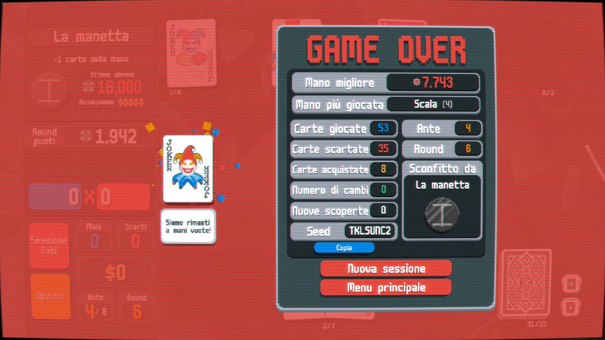

New Joker Energy
Tutto l’accaduto è frutto di una mia fantasia ma non vi è alcun riferimento a persone fantastiche.
Atto I
Sta arrivando l’estate, immaginate quella che per voi è l’idea di una stanza con fumetti, videogiochi e qualche libro.
La situazione è questa: musica ambient nelle cuffie, pc acceso, luce spenta e finestra socchiusa.
Dalla finestra entra una leggera brezza che rinfresca la stanza e riempie i polmoni d’ossigeno pronto a far da comburente al cervello per macinare la quantità di dati e variabili che sta elaborando.
Ho scoperto questo gioco di carte, lo sto avviando adesso per la prima volta. È passato del tempo ma sono pronto a gestirlo. Ho giocato la prima partita, ho perso. Ma la mia mente è stata bombardata di così tanti stimoli che ho sentito subito il bisogno di ricominciare a giocare. Assorbite le meccaniche di base, portare a casa la prima vittoria si è intervallata tra un "NOOO S’è ROTTA LA BANANAAAA" e un "Ho fatto un colore da 10k di FICHE". Il gioco non ha una componente PVP, posso gestire come voglio le pause e farle durare quanto voglio. Ero completamente preso, quella sensazione mi era così tanto mancata.
C’è odore di distilleria nell’aria, do le spalle ad un imponente alambicco in rame. Sono seduto in uno sgabello molto comodo. Una traballante lampada da tavolo è accesa nel quadrato tavolino a cui sono seduto. Vicino un leggero QR code con la scritta "RAME". La porta alle mie spalle dà nel posto dove i clienti vanno a fumare, viene aperta quasi di continuo. L’aria che batte sulla mia schiena mi rincuora, dà una sensazione di tranquillità e calma.
Per spezzare l’imbarazzo e il silenzio generale esordisco con qualche discorso generalista su come si faccia il gin e sul fatto che trovo la produzione di alcolici molto affascinante. Il discorso prende piede. Il ghiaccio che ci teneva fermi e silenziosi ha fatto la stessa fine del ghiaccio fermo in un bicchiere vuoto da ore. Si sono iniziati a toccare argomenti delicati. Ci si sta iniziando a conoscere e a scoprire. Da una buona ora sta andando avanti un botta e risposta su sogni, dubbi, passioni, interessi. La situazione è così intensa che sembra annullare lo scorrere del tempo e l’esistenza dello spazio circostante. Ero completamente preso, quella sensazione mi era così tanto mancata.
Atto II
Si sta abbassando la temperatura nella stanza. I grilli hanno reso il loro canto più rado. Le zanzare si sono attivate ancora di più rendendo tutto altamente fastidioso.
Il gioco si sta facendo più complesso e avvincente. La possibilità di creare dei veri e propri motori di gioco tramite l’utilizzo di più joker combinati ha attivato ancora di più la mia ricerca di dopamina. Ma vittoria dopo vittoria la strada si è fatta sempre più complessa ed ardua.
"Se qualcuno avesse fatto una build migliore della mia?" "Perché non riesco a vincere come gli altri?". Un turbinio di domande inizia a offuscare la mia testa e a cancellare completamente i pensieri. Il gioco si sta trasformando in un dover dimostrare agli altri chi sono e di cosa sono capace. Vengo trasportato in un vortice di frustrazione e competizione senza misura.
Ogni partita persa diventa uno strazio, ogni build fallita diventa una condanna a morte per la mia autostima. Decido di alzarmi per andare in bagno. Sono nuovamente caduto in quel loop.
Il cameriere ci porta i drink con una gentilezza disarmante. Il gin mediterraneo è per me. Lo prendo, lo assaggio. Fresco, leggermente frizzante con una buona nota amara e secca. L’aria si sta raffreddando un po’ e la situazione nel locale sta diventando molto meno caotica. Inizio a mal sopportare lo sgabello in cui sono seduto e a sentire la mancanza di un posto dove poter appoggiare la schiena.
Siamo arrivati in quel momento della chiacchierata in cui si fantastica sulle cose che si faranno il giorno dopo. Un pic-nic con formaggio e fave, un giro per Assisi, una vacanza al mare in posti di lusso. Sembra quasi di conoscerla da una vita.
Finito il discorso sento come un click provenire da qualche parte nel locale e da quel momento la discussione ha iniziato a prendere una piega inaspettata.
Sto iniziando a sentirmi giudicato. Ad una mia amica è successa una cosa molto simile, più o meno nello stesso periodo, e l’idea che possa succedere anche a me mi terrorizza.
Questa breve parentesi viene presto interrotta da un mio "assaggiamoci i drink a vicenda". Non ricordo il nome del drink, ma calza a pennello con le caratteristiche della persona che ho davanti. Se siamo quello che beviamo, lei era perfettamente bilanciata come quel drink.
Di botto, la magia scompare. Quella che mi sembrava una piccola virgola in una frase d’amore è un ago in un palloncino che sta per esplodere.
Come calcoleresti se un numero è palindromo senza usare le stringhe?
Per fare bella figura e per far capire quanto io ci tenga alla persona che ho davanti impiego tutte le mie energie in quella singola domanda annullando completamente tutto il resto. Vengo trascinato in un vortice dove la paura di deludere, la paura di sbagliare, la paura di non essere abbastanza continuano a spingermi giù. Ogni respiro diventava pesante, ogni tentativo di interrompere mi rende carnefice di me stesso per mancata risoluzione. Ogni comportamento sbagliato in preda al panico mi costringe ad iper-compensare. Sono nuovamente caduto in quel loop.
Atto III
Il silenzio più totale è piombato nel momento più alto del mio picco di concentrazione. La temperatura della stanza si era abbassata così tanto che dovetti chiudere la finestra e infilarmi una felpa. Lo schermo si è riempito di fastidiosi moscerini e le mie gambe sembrano un campo minato di punture d’insetti.
Ero immerso in una partita perfetta, avevo costruito una build basata sulle carte dorate e argentate, sui soldi e ci avevo aggiunto un pizzico di moltiplicatori e punti sparsi nel mazzo.
Il circolo "Nuova partita, pensa la build e gioca" aveva finalmente dato i suoi frutti. Ne avevo capito appieno tutte le meccaniche. Di botto successe, annientai la fiche dorata.
L’ansia da prestazione, la paura e il senso di incapacità si spensero come un fuoco di paglia.
Il locale si è svuotato, è calato il silenzio. La porta per la zona fumatori è rimasta troppo tempo aperta e il freddo dell'aria sulla mia schiena è diventato quasi doloroso. Ho portato una felpa ma non basta, non riesce a scaldarmi.
Come nel locale, il silenzio cadde anche nella nostra conversazione. Le uniche parole che vennero pronunciate senza che io mi sentissi di troppo riguardavano il problema che mi era stato posto. Ero riuscito a capirlo e a risolverlo, ma sembrava non bastare mai. A compito finito provai a tornare a parlare di argomenti leggeri e spensierati cercando disperatamente quella foga iniziale che ci aveva preso ad entrambi.
Iniziarono ad arrivare risposte da NPC e realizzai che quello in cui mi trovavo era un colloquio di lavoro. L’esaminatrice prese il telefono in mano, mi disse "le rifaremo sapere". Scoprii qualche giorno più tardi che avevano preso un’altra persona dandole pure un ruolo diverso da quello che mi era stato proposto.
Nel mio piccolo stavo solo cercando di passare una bella serata con dell’ottima compagnia.
Finale agrodolce
Non sono stato felice di aver vinto a Balatro. La vetta non mi ha dato la felicità che speravo, forse, mi ha inaridito ancora di più. Il gioco è ancora nel mio pc e l’idea di cercare di costruire la build migliore mi entusiasma ancora tantissimo. Ho ancora almeno 6 mazzi con cui vincere. Ho iniziato a segnarmi perché perdo, ad accettarlo e a capire come posso migliorare la mia partita.
Non sono stato triste di non aver ottenuto il lavoro. L’aver risolto il problema mi ha reso felice e soddisfatto di me stesso, ma in quel momento volevo solo della compagnia non un problema da risolvere. L’esaminatrice, dal canto suo, stava solo cercando di fare il suo lavoro e si è ritrovata una persona con così tanta energia dentro che è stato impossibile non farsi trascinare. Spero le sia piaciuto entrare nel mio piccolo e caotico mondo. Questa condivisione, però, non è passata inosservata. Ha scombussolato e messo in discussione tante cose. Il trambusto che ne è risultato mi sarà di insegnamento per le persone future con cui condividere. Dovrò fare una più attenta selezione.
Non c’è un vero finale a queste due storie. Balatro ancora non l’ho finito, non ho trovato ancora lavoro e continuo a sentirmi comunque solo.
Grazie di aver letto, vi consiglio di prendere una bella tempura di gamberi e degli involtini primavera.